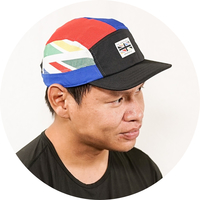

|  |
Fahmi 'Kei' BasarContent Creator of OKEI Studios We are building the biggest marketplace for sports & outdoor goods in Malaysia. Link to: Contact Information |
This inspirational short documentary tells the story of tragedy and comeback journey of Azran Osman-Rani, a Malaysian business leader and an amateur Ironman triathlete, who was severely injured in a car crash while cycling. From
the depths of despair, he musters the will to recover, the resilience to persevere and the determination to get back to triathlon racing in less than 6 months - so that he can teach his children that life will knock you down hard, but what counts
is our ability to get back up.
Watch here: iFlix
The biggest online marketplace for GPS Watches, Outdoor goods and Running Products
Learn more: BigBigPlace
A platform for health and fitness creators to educate Malaysians with real science and training to improve their health
Learn more: OKEI Studios
A Facebook news channel that talks about what was happening around the PJ and KL area. Defunct.
A platform where we educate people on the importance of heart rate and structured training. It was responsible to spark more interest in Zone 2 and MAF method running in Malaysia. Rebranded and expanded to OKEI Studios
|
|